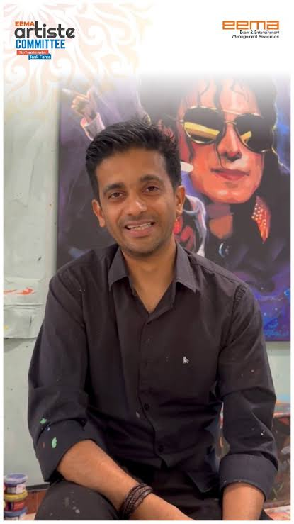

Vilas Nayak is a passionate sketch artist known for creating beautiful hand-drawn portraits with exceptional precision and creativity. His artworks capture emotions, expressions, and realistic details using simple sketching techniques. Every portrait reflects dedication, patience, and artistic excellence.
Next ➜